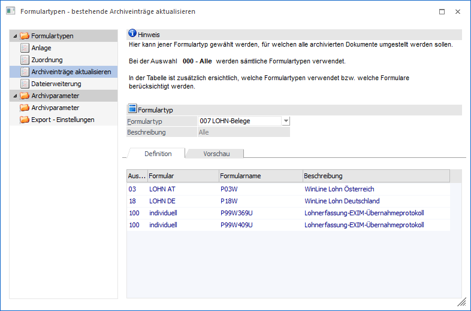
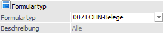
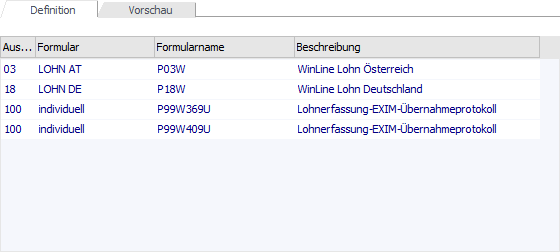
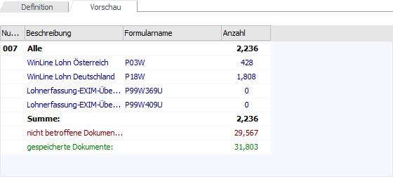

Mit dieser Funktion, die über den Menüpunkt…
1 WinLine ADMIN
1 Archiv
1 Formulartypen
1 Bereich "Formulartypen - Archiveinträge aktualisieren"
… aufgerufen werden kann, kann die Formulartypen-Zuordnung bei bestehenden Archiveinträge aktualisiert werden.
Hinweis
Durch die Aktualisierung des Formulartyps wird auch die Berechtigung in den Archiveinträgen aktualisiert.

Formulartyp

Ø Formulartyp
Aus der Auswahlbox kann der Formulartyp ausgewählt werden, für welchen die bestehenden Archiveinträge umgewandelt werden sollen. Wird der Eintrag "000 - Alle" ausgewählt, dann erfolgt die Umstellung für alle Formulartypen.
Register "Definition"

Im Register "Definition" werden in der Tabelle alle Formulare angezeigt, für welche die Umstellung vorgenommen wird, wobei diese Einträge aus der Formulartypen - Zuordnung übernommen werden.
Register "Vorschau"

Im Register "Vorschau" wird eine Statistik angezeigt, aus der ersichtlich ist, wie viele Dokumente anhand des Formulartyps umgestellt werden.
Buttons

Ø Ok
Durch Drücken des Buttons "Ok" bzw. der Taste F5 werden die entsprechenden Archiveinträge verändert.
Ø Ende
Bei Anwahl des Buttons "Ende" bzw. der Taste ESC wird das Fenster geschlossen.
Zusammenfassung für die Vergabe von Berechtigungen
ü Im Formulartyp wird unter anderem gesteuert, welche Berechtigung bei dieser Art von Dokumenten vergeben wird.
ü In der Zuordnung wird gesteuert, welche Formulare zu welchem Formulartyp gehören bzw. in Verbindung gebracht werden.
ü Über das "Archiveinträge aktualisieren" werden bestehende Archiveinträge (wo nur das Formular bekannt ist) zu Formulartypen zugeordnet, womit dann auch die Berechtigung übernommen wird.